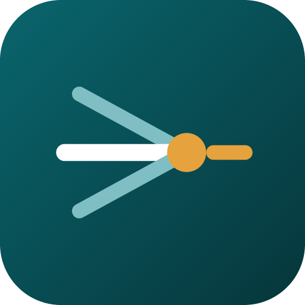

fore + vue — foresight. Teal lines converge to one amber focal point that looks forward. The single device Forevue is remembered by.
Clear space = the mark's own height. Below ~120px lockup width, use the icon alone.